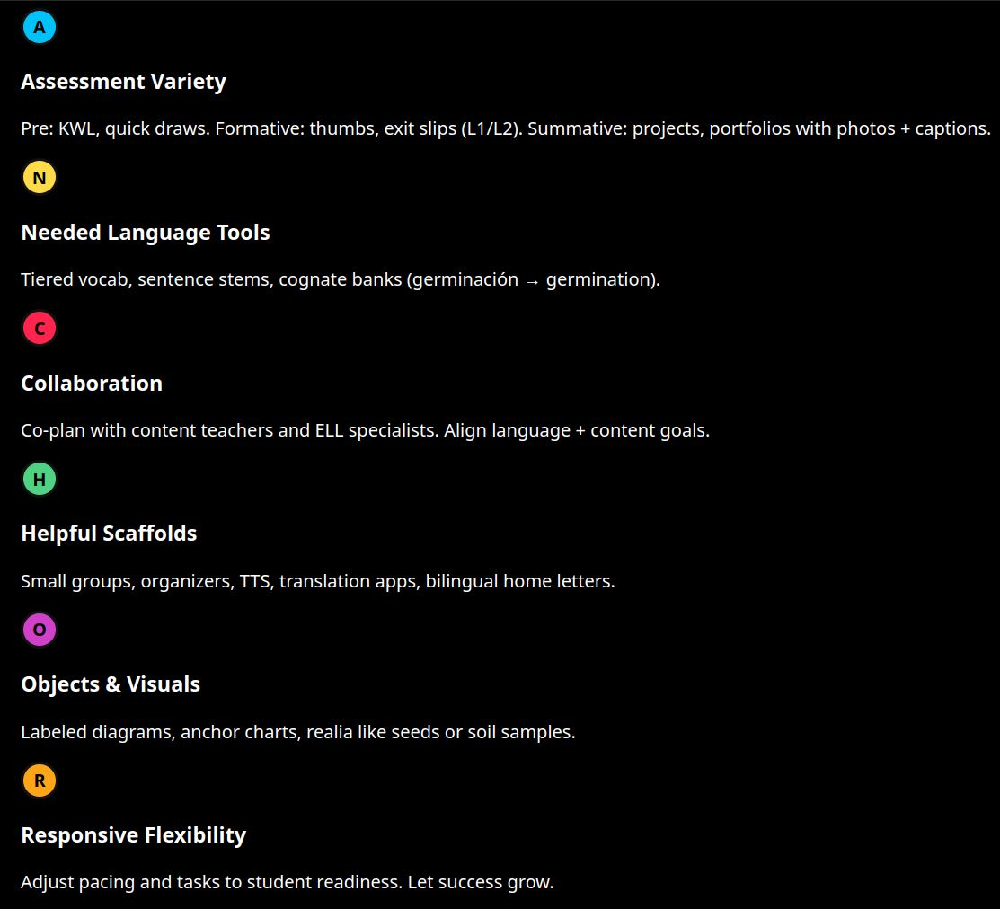
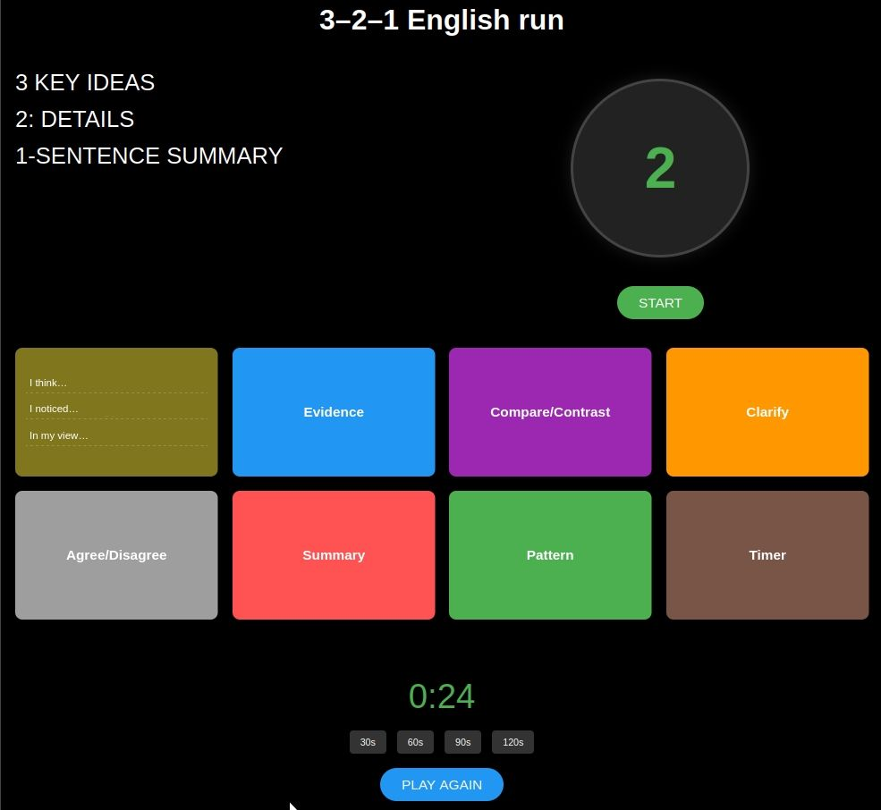

Based on my reflections, I've developed these core guidelines for my planning and instruction:
Guideline: Every lesson culminates in a primary task that requires students to use the target language to achieve a real-world objective (e.g., plan a trip, negotiate a solution, describe a process to a colleague).
In Practice: This is the "why" of the lesson. Instead of "learn the past tense," the goal becomes "tell a story about a memorable childhood event." This provides immediate context and relevance, making the language learning purposeful for adult learners.
Guideline: Break down the final task into manageable steps, providing the language, strategies, and support needed for all students to succeed. The mantra "I do, We do, You do" guides this process.
In Practice: Use authentic materials (menus, news clips, brochures) and adapted materials (simplified texts with key vocabulary highlighted). Visual aids, graphic organizers, and sentence frames are essential tools in my classroom to make challenging input comprehensible.
Guideline: The teacher is a facilitator. The classroom must be a safe space for trying and even making mistakes. Learning happens when students grapple with language together.
In Practice: Plan for think-pair-share activities, structured group work, and peer feedback sessions. This reduces reliance on the teacher as the sole source of knowledge and builds a community of learners.
Guideline: Contrastive analysis moments: compare how a feature works across languages when relevant.
In Practice:
Mini-lessons on connectors, hedging, passive voice, nominalization, and discipline-specific phrasing.
Guideline: Track both content mastery and language growth with simple rubrics aligned to objectives.
In Practice:
Use quick oral checks, whiteboards, exit tickets with visuals, and one-minute audio reflections.
Guideline: Teach and model reading strategies
In Practice: Preview, chunk, annotate, summarize, take notes, and use glossaries/translation tools ethically.
The chart was created as a part of my course assignment (see Appendix).
| Resource Type | Examples | Purpose |
|---|---|---|
| Visual and graphic supports | Content-aligned picture banks and icon sets, Graphic organizers (Frayer model, cause–effect chain, claim–evidence–reasoning), Anchor charts with sentence starters and language moves | Make abstract concepts concrete and provide language support |
| Text scaffolds | Leveled texts on the same topic; text sets with varying modalities, Glossed texts with embedded definitions and audio-read versions, Bilingual glossaries for each unit | Provide accessible reading materials at appropriate language levels |
| Technology | Read-aloud and annotation tools (e.g., Immersive Reader, Kami), Translation with caution: demonstrate checking meaning, not copying, Voice recording for oral rehearsals; captioned short videos | Enhance accessibility and provide multiple modalities for engagement |
| Collaboration tools | Shared slides/whiteboards for co-constructing notes, Discussion platforms that support audio, images, and short text | Facilitate interaction and collaborative learning |
Micro-writing with a target connector set
Oral rehearsal with a peer or voice memo responding to a prompt
Vocabulary: create a sketch-note, Frayer model, or mini-dialogue
Reading: annotate a short text; record a 60-second summary
Speaking: rehearse with a prompt + frames; submit audio
Grammar in context: revise a sentence to add precision (appositives, adverb clauses)
Read a short source in L1, then produce an English summary with visuals
Build a bilingual concept map before drafting in English
3–2–1 weekly reflections (3 new words/phrases, 2 strategies, 1 question)
Retrieval practice using self-made flashcards with images/examples
The game was designed as a part of my course assignment (see Appendix).
Students will be able to describe a simple process (e.g., cooking a dish, using an app) using sequencing language (First, Then, Next, After that, Finally) and the imperative mood.
Show a short, fun video of someone making a paper airplane without words. Ask "What is he doing? What are the steps?"
I Do: Model the language by explaining how to make coffee. Use visuals for each step and write the sequencing words on the board.
We Do: Give students a jumbled series of images showing how to use an ATM. In pairs, they use sentence frames (First, you ___. Then, you ___.) to put the steps in order.
In small groups, students choose a simple process and create a short video or live demonstration explaining it to the class. They must use the target language.
I would suggest students try explaining their morning routine to themselves in the mirror using this language, or watch a "how-to" video on YouTube in English and note the sequencing words used.
Content + WIDA/Linguistic targets
Content: …
Language: Function + features + modality (listen/speak/read/write)
Vocabulary: Tier 2/3 words; word parts
Syntax/Discourse: sentence starters, text structures, connectors
Modalities and accessibility notes
Connect to prior knowledge; preview visuals
Model content and the target language move
Collaborative routine with frames; teacher confers/formative checks
Scaffolded choice; translanguaging options
Criteria-aligned quick check; plan to reteach
Newcomer, developing, and advanced supports; IEP/504 considerations
What worked? Evidence? What to adjust next?
| Content Area | Language Objective |
|---|---|
| Science | Students will describe processes using temporal connectors (first, next, then, finally) and labeled diagrams. |
| Math | Students will justify solutions orally using precise math vocabulary (sum, ratio, increase/decrease) and comparative language (greater than, less than). |
| ELA | Students will cite textual evidence using reporting verbs (argues, suggests, claims) and quote integration. |
| Social Studies | Students will compare perspectives using contrastive connectors (however, whereas, on the other hand) and modal verbs to hedge claims. |
| Proficiency Level | Support Strategies |
|---|---|
| Newcomers | Heavy visuals/realia; bilingual supports; partner talk in L1; product options (labeled diagrams, matching tasks). |
| Developing | Sentence/paragraph frames; modeled paragraphs; guided notes; increased output expectations. |
| Expanding/Bridging | Genre-specific conventions; academic vocabulary nuance; peer review; independent research tasks. |